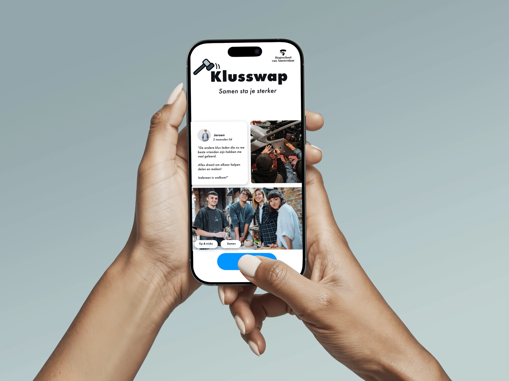
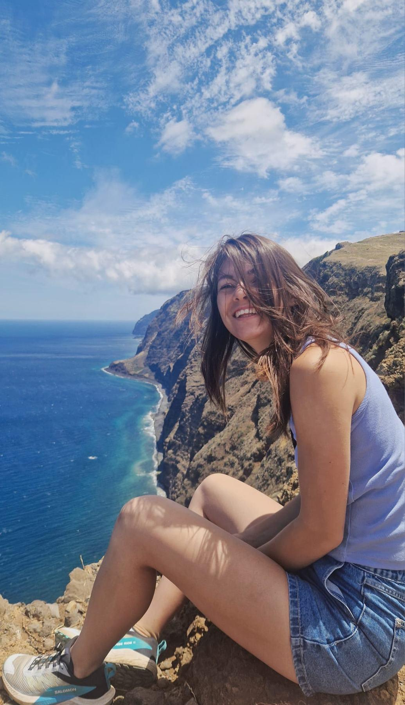
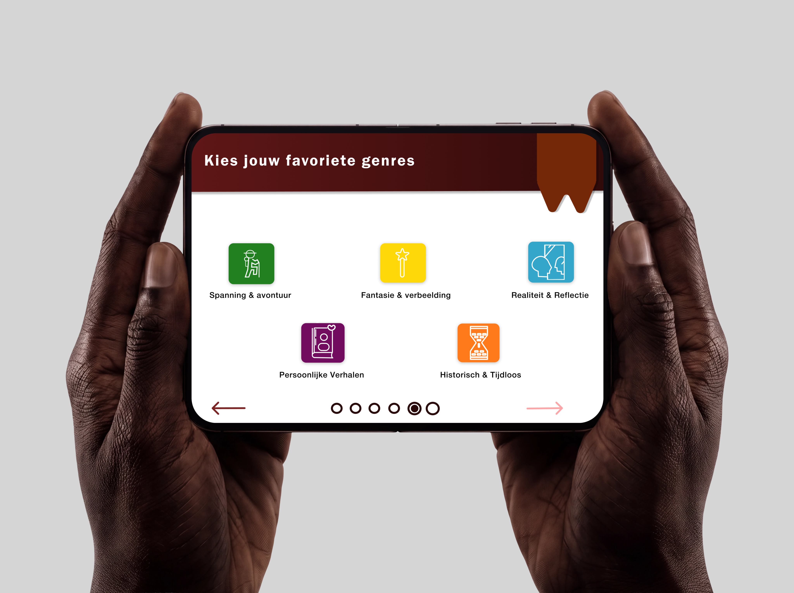

KlusSwap
For this project, the task was to create a digital or physical design aimed at helping the community get to know each other.
View ProjectI design meaningful digital experiences that are useful, human, and built to make the world a little better.
View My WorkMy name is Pien van Kalkeren and I am a student at the Amsterdam University of Applied Sciences with an addiction to UX design bt also available for UI!
In every project I work on I strive to make a postive impact. My goal is to create solutions that are not only functional but also make the better a little better.
What's fun to know about me is that I have experience in animal care (I love all of them), electrical work and I always loved being creative what brought me to my current education.
I study Communication and Multimedia Design in Amsterdam and want to create work that makes a change.


For this project, the task was to create a digital or physical design aimed at helping the community get to know each other.
View Project
The Municipality of Amsterdam aims to promote reading pleasure and literacy among students with a user-friendly iPad app in the school library.
View Project
I’ve always felt a deep connection to animals and the natural world. They remind me to slow down, be patient, and care for the life around me. That feeling is part of how I work too: thoughtful, grounded, and full of care.

Running, climbing, and strength keep me moving. They give me energy, build my resilience, and remind me that real growth begins when I stop playing safe. That mindset shapes how I design too.

I design for people, not just screens. I want my work to feel useful, human, and meaningful in the real world. The goal is not only to make something look beautiful, but to make life a little better through it.
I’m always happy to talk design, projects, ideas, and future collaborations. If you have something thoughtful in mind, let’s make it.